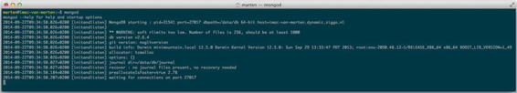
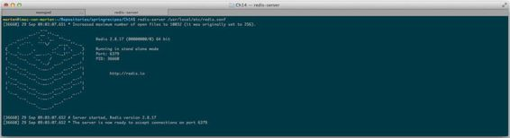
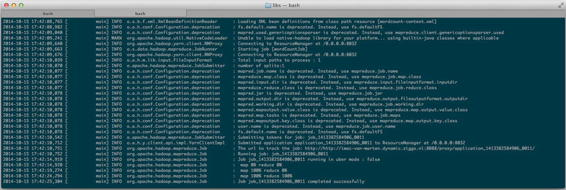
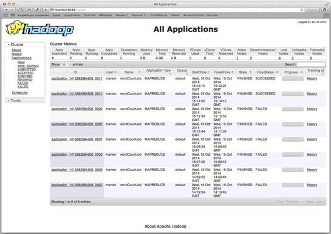
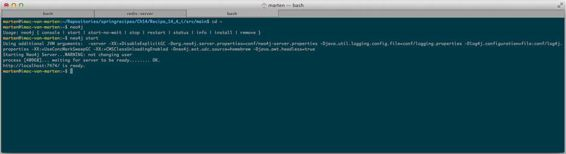
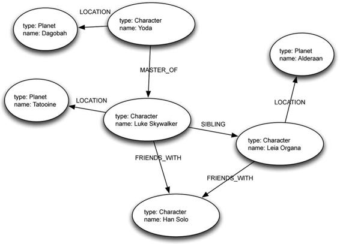

NoSQL and BigData
Most applications use a relational database like Oracle, MySQL, or Postgresql; however there is more too data storage then just SQL databases. There are:
Although each of these different technologies (and even the different implementations) have their own use, they can also be hard to use or configure. Additionally, sometimes it might feel that one writes a lot of duplicated plumbing code for handling transactions and error translation.
The Spring Data project can help make life easier; it can help configure the different technologies with the plumbing code. Each of the integration modules will have support for exception translation to Spring’s consistent DataAccessException hierarchy and the use of Spring’s templating approach.
Spring Data also provides a cross-storage solution for some technologies which means part of your model can be stored in a relational database with JPA and the other part can be stored in a graph or document store.
Problem
You want to use MongoDB to store and retrieve documents.
Solution
Download and configure MongoDB.
How It Works
Downloading and Starting MongoDB
First download MongoDB from http://www.mongodb.org. Select the one that is applicable for the system in use and follow the installation instructions in the manual (http://docs.mongodb.org/manual/installation/). When the installation is complete MongoDB can be started.
To start MongoDB execute the mongodb command on the command line (see Figure 13-1). This will start a MongoDB server on port 27017. If a different port is required this can be done by specifying the --port option on the command line when starting the server.

Figure 13-1. Output after initial start of MongoDB
The default location for storing data is \data\db (for Windows users this is from the root of the disk where MongoDB was installed!) to change the path use the --dbpath option on the command line. Make sure that the directory exists and is writeable for MongoDB.
Connecting to MongoDB
For a connection to MongoDB an instance of Mongo is needed. This instance can be used to get the database to use and the actual underlying collection(s). Let’s create a small system that uses MongoDB first to create an object to use for storage.
package com.apress.springrecipes.nosql;
public class Vehicle {
private String vehicleNo;
private String color;
private int wheel;
private int seat;
public Vehicle() {
}
public Vehicle(String vehicleNo, String color, int wheel, int seat) {
this.vehicleNo = vehicleNo;
this.color = color;
this.wheel = wheel;
this.seat = seat;
}
/// Getters and Setters have been omitted for brevity.
}
To work with this object, create a repository interface.
package com.apress.springrecipes.nosql;
public interface VehicleRepository {
public long count();
public void save(Vehicle vehicle);
public void delete(Vehicle vehicle);
public List<Vehicle> findAll()
public Vehicle findByVehicleNo(String vehicleNo);
}
For MongoDB create the MongoDBVehicleRepository implementation of the VehicleRepository.
package com.apress.springrecipes.nosql;
import com.mongodb.*;
import javax.annotation.PostConstruct;
import java.util.ArrayList;
import java.util.List;
public class MongoDBVehicleRepository implements VehicleRepository {
private final Mongo mongo;
private final String collectionName;
private final String databaseName;
public MongoDBVehicleRepository(Mongo mongo, String databaseName, String collectionName) {
this.mongo = mongo;
this.databaseName=databaseName;
this.collectionName = collectionName;
}
@Override
public long count() {
return getCollection().count();
}
@Override
public void save(Vehicle vehicle) {
BasicDBObject query = new BasicDBObject("vehicleNo", vehicle.getVehicleNo());
DBObject dbVehicle = transform(vehicle);
DBObject fromDB = getCollection().findAndModify(query, dbVehicle);
if (fromDB == null) {
getCollection().insert(dbVehicle);
}
}
@Override
public void delete(Vehicle vehicle) {
BasicDBObject query = new BasicDBObject("vehicleNo", vehicle.getVehicleNo());
getCollection().remove(query);
}
@Override
public List<Vehicle> findAll() {
DBCursor cursor = getCollection().find(null);
List<Vehicle> vehicles = new ArrayList<>(cursor.size());
for (DBObject dbObject : cursor) {
vehicles.add(transform(dbObject));
}
return vehicles;
}
@Override
public Vehicle findByVehicleNo(String vehicleNo) {
BasicDBObject query = new BasicDBObject("vehicleNo", vehicleNo);
DBObject dbVehicle = getCollection().findOne(query);
return transform(dbVehicle);
}
private DBCollection getCollection() {
return mongo.getDB(databaseName).getCollection(collectionName);
}
private Vehicle transform(DBObject dbVehicle) {
return new Vehicle(
(String) dbVehicle.get("vehicleNo"),
(String) dbVehicle.get("color"),
(int) dbVehicle.get("wheel"),
(int) dbVehicle.get("seat"));
}
private DBObject transform(Vehicle vehicle) {
BasicDBObject dbVehicle = new BasicDBObject("vehicleNo", vehicle.getVehicleNo())
.append("color", vehicle.getColor())
.append("wheel", vehicle.getWheel())
.append("seat", vehicle.getSeat());
return dbVehicle;
}
@PostConstruct
public void shutdown() {
mongo.getDB(databaseName).dropDatabase();
}
}
First notice the constructor it takes three arguments. The first is the actual MongoDB client, the second is the name of the database that is going to be used, and the last is the name of the collection in which the objects are stored. Documents in mongodb are stored in collections and a collection belongs to a database.
For easy access to the DBCollection used there is the getCollection method which gets a connection to the DB and returns the configured DBCollection. This DBCollection can then be used to execute operations like storing, deleting, or updating documents.
The save method will first try to update and existing document. If this fails a new document for the given Vehicle will be created. To store objects, start by transforming the domain object Vehicle into a DBObject in this case a BasicDBObject. The BasicDBObject takes key/value pairs of the different properties of our Vehicle object.
When querying for a document the same DBObject is used, the key/value pairs that are present on the given object are used to lookup documents, an example can be found in the findByVehicleNo method in the repository.
Conversion from and to Vehicle objects is done through the two transform methods.
To use this class create the following Main class.
package com.apress.springrecipes.nosql;
import com.mongodb.MongoClient;
import org.apache.commons.lang3.builder.ToStringBuilder;
import org.apache.commons.lang3.builder.ToStringStyle;
import java.util.List;
public class Main {
public static final String DB_NAME = "vehicledb";
public static void main(String[] args) throws Exception {
// Default mongoclient for localhost and port 27017
MongoClient mongo = new MongoClient();
VehicleRepository repository = new MongoDBVehicleRepository(mongo, DB_NAME, "vehicles");
System.out.println("Number of Vehicles: " + repository.count());
repository.save(new Vehicle("TEM0001", "RED", 4, 4));
repository.save(new Vehicle("TEM0002", "RED", 4, 4));
System.out.println("Number of Vehicles: " + repository.count());
Vehicle v = repository.findByVehicleNo("TEM0001");
System.out.println(ToStringBuilder.reflectionToString(v, ToStringStyle.SHORT_PREFIX_STYLE));
List<Vehicle> vehicleList = repository.findAll();
System.out.println("Number of Vehicles: " + vehicleList.size());
for (Vehicle vehicle : vehicleList) {
repository.delete(vehicle);
}
System.out.println("Number of Vehicles: " + repository.count());
// Cleanup and close
mongo.getDB(DB_NAME).dropDatabase();
mongo.close();
}
}
The main class constructs an instance of the MongoClient which will try to connect to port 27017 on localhost for a MongoDB instance. If another port or host is needed there is also a constructor which takes a host and port as parameters new MongoClient("mongodb-server.local", 28018).
Next an instance of the MongoDBVehicleRepository is constructed, the earlier constructed MongoClient is passed as well as the name of the database, vehicledb, and name of the collection, vehicles.
The next lines of code will insert two vehicles into the database, try to find them, and finally delete them. The last lines in the main class will close the mongo instance and before doing so will drop the database. The latter is something you don’t want to do when using a production database.
Using Spring for Configuration
The setup and configuration of the MongoClient and MongoDBVehicleRepository can easily be moved to Spring configuration.
package com.apress.springrecipes.nosql.config;
import com.apress.springrecipes.nosql.MongoDBVehicleRepository;
import com.apress.springrecipes.nosql.VehicleRepository;
import com.mongodb.Mongo;
import com.mongodb.MongoClient;
import org.springframework.context.annotation.Bean;
import org.springframework.context.annotation.Configuration;
import java.net.UnknownHostException;
@Configuration
public class MongoConfiguration {
public static final String DB_NAME = "vehicledb";
@Bean
public Mongo mongo() throws UnknownHostException {
return new MongoClient();
}
@Bean
public VehicleRepository vehicleRepository(Mongo mongo) {
return new MongoDBVehicleRepository(mongo, DB_NAME, " vehicles");
}
}
The following method has been added to the MongoDBVehicleRepository to take care of the cleanup of the database.
@PreDestroy
public void cleanUp() {
mongo.getDB(databaseName).dropDatabase();
}
Finally the Main program needs to be updated to reflect the changes.
package com.apress.springrecipes.nosql;
...
import org.springframework.context.ApplicationContext;
import org.springframework.context.annotation.AnnotationConfigApplicationContext;
import org.springframework.context.support.AbstractApplicationContext;
import java.util.List;
public class Main {
public static final String DB_NAME = "vehicledb";
public static void main(String[] args) throws Exception {
ApplicationContext ctx = new AnnotationConfigApplicationContext(MongoConfiguration.class);
VehicleRepository repository = ctx.getBean(VehicleRepository.class);
...
((AbstractApplicationContext) ctx).close();
}
}
The configuration is loaded by an AnnotationConfigApplicationContext from this context the VehicleRepository bean is retrieved and used to execute the operations. When the code that has run the context is closed, it triggers the cleanUp method in the MongoDBVehicleRepository.
Using a MongoTemplate to Simplify MongoDB code
At the moment the MongoDBVehicleRepository uses the plain MongoDB API. Although not very complex it still requires knowledge about the API. Next to that there are some repetitive tasks like mapping from and to a Vehicle object. Using a MongoTemplate can simplify the repository considerably.
 Note Before using Spring Data Mongo the relevant jars need to be added to the classpath. When using Maven add the following dependency:
Note Before using Spring Data Mongo the relevant jars need to be added to the classpath. When using Maven add the following dependency:
<dependency>
<groupId>org.springframework.data</groupId>
<artifactId>spring-data-mongodb</artifactId>
<version>1.6.0.RELEASE</version>
</dependency>
package com.apress.springrecipes.nosql;
import com.mongodb.DB;
import com.mongodb.MongoException;
import org.springframework.dao.DataAccessException;
import org.springframework.data.mongodb.core.DbCallback;
import org.springframework.data.mongodb.core.MongoTemplate;
import org.springframework.data.mongodb.core.query.Query;
import javax.annotation.PreDestroy;
import java.util.List;
import static org.springframework.data.mongodb.core.query.Criteria.where;
public class MongoDBVehicleRepository implements VehicleRepository {
private final MongoTemplate mongo;
private final String collectionName;
public MongoDBVehicleRepository(MongoTemplate mongo, String collectionName) {
this.mongo = mongo;
this.collectionName = collectionName;
}
@Override
public long count() {
return mongo.count(null, collectionName);
}
@Override
public void save(Vehicle vehicle) {
mongo.save(vehicle, collectionName);
}
@Override
public void delete(Vehicle vehicle) {
mongo.remove(vehicle, collectionName);
}
@Override
public List<Vehicle> findAll() {
return mongo.findAll(Vehicle.class, collectionName);
}
@Override
public Vehicle findByVehicleNo(String vehicleNo) {
return mongo.findOne(new Query(where("vehicleNo").is(vehicleNo)), Vehicle.class, collectionName);
}
@PreDestroy
public void cleanUp() {
mongo.execute(new DbCallback<Object>() {
@Override
public Object doInDB(DB db) throws MongoException, DataAccessException {
db.dropDatabase();
return null;
}
});
}
}
The code looks a lot cleaner when using a MongoTemplate. It has convenience methods for almost every operation save, update, and delete. Additionally, it has a very nice query builder approach (see the findByVehicleNo method).
There are no more mappings to and from the mongo classes so there is no need to create a DBObject anymore. That burden is now handled by the MongoTemplate. To convert the Vehicle object to the MongoDB classes a MongoConverter is used. By default a MappingMongoConverter is used. This mapper maps properties to attribute names and vice versa and while doing so also tries to convert from and to the correct datatype. If a specific mapping is needed it is possible to write your own implementation of a MongoConverter and register it with the MongoTemplate.
Due to the use of the MongoTemplate the configuration needs to be modified.
package com.apress.springrecipes.nosql.config;
import com.apress.springrecipes.nosql.MongoDBVehicleRepository;
import com.apress.springrecipes.nosql.VehicleRepository;
import com.mongodb.Mongo;
import com.mongodb.MongoClient;
import org.springframework.context.annotation.Bean;
import org.springframework.context.annotation.Configuration;
import org.springframework.data.mongodb.core.MongoFactoryBean;
import org.springframework.data.mongodb.core.MongoTemplate;
import java.net.UnknownHostException;
@Configuration
public class MongoConfiguration {
public static final String DB_NAME = "vehicledb";
@Bean
public MongoTemplate mongo() throws Exception {
return new MongoTemplate(mongoFactoryBean().getObject(), DB_NAME);
}
@Bean
public MongoFactoryBean mongoFactoryBean() {
return new MongoFactoryBean();
}
@Bean
public VehicleRepository vehicleRepository(MongoTemplate mongo) {
return new MongoDBVehicleRepository(mongo, "vehicles");
}
}
Notice the use of the MongoFactoryBean. It allows for easy setup of the MongoClient. It isn’t a requirement for using the MongoTemplate but it makes it easier to configure the client. Another benefit is that there is no more java.net.UnknownHostException thrown that is handled internally by the MongoFactoryBean.
The MongoTemplate has various constructors. The one used here takes a Mongo instance and the name of the database to use. To resolve the database an instance of a MongoDbFactory is used; by default the SimpleMongoDbFactory. In most cases this is sufficient but if some special case arises, like encrypted connections, it is quite easy to extend the default implementation.
Finally the MongoTemplate is injected, together with the name of the collection, into the MongoDBVehicleRepository.
A final addition needs to be made to the Vehicle object. It is required that a field is available for storing the generated id. This can be either a field with the name id or a field with the @Id annotation.
public class Vehicle {
private String id;
...
}
Using Annotations to Specify Mapping Information
Currently the MongoDBVehicleRepository needs to know the name of the collection we want to access. It would be easier and more flexible if this could be specified on the Vehicle object, just as with a JPA @Table annotation. With Spring Data Mongo this is possible using the @Document annotation.
package com.apress.springrecipes.nosql;
import org.springframework.data.mongodb.core.mapping.Document;
@Document(collection = "vehicles")
public class Vehicle { ... }
The @Document annotation can take two attributes: collection and language. The collection property is for specifying the name of the collection to use, the language property is for specifying the language for this object. Now that the mapping information is on the Vehicle class the collection name can be removed from the MongoDBVehicleRepository.
public class MongoDBVehicleRepository implements VehicleRepository {
private final MongoTemplate mongo;
public MongoDBVehicleRepository(MongoTemplate mongo) {
this.mongo = mongo;
}
@Override
public long count() {
return mongo.count(null, Vehicle.class);
}
@Override
public void save(Vehicle vehicle) {
mongo.save(vehicle);
}
@Override
public void delete(Vehicle vehicle) {
mongo.remove(vehicle);
}
@Override
public List<Vehicle> findAll() {
return mongo.findAll(Vehicle.class);
}
@Override
public Vehicle findByVehicleNo(String vehicleNo) {
return mongo.findOne(new Query(where("vehicleNo").is(vehicleNo)), Vehicle.class);
}
}
Of course the collection name can be removed from the configuration of the MongoDBVehicleRepository as well.
@Configuration
public class MongoConfiguration {
...
@Bean
public VehicleRepository vehicleRepository(MongoTemplate mongo) {
return new MongoDBVehicleRepository(mongo);
}
}
When running the Main class the result should still be the same as it was before.
Create a Spring Data MongoDB Repository
Although the code has been reduced a lot in that there is no more mapping from and to MongoDB classes and no more collection names passing around, it can still be reduced even further. Leveraging another feature of Spring Data Mongo the complete implementation of the MongoDBVehicleRepository could be removed.
First the configuration needs to be modified.
package com.apress.springrecipes.nosql.config;
import org.springframework.context.annotation.Bean;
import org.springframework.context.annotation.Configuration;
import org.springframework.data.mongodb.core.MongoFactoryBean;
import org.springframework.data.mongodb.core.MongoTemplate;
import org.springframework.data.mongodb.repository.config.EnableMongoRepositories;
@Configuration
@EnableMongoRepositories(basePackages = "com.apress.springrecipes.nosql")
public class MongoConfiguration {
public static final String DB_NAME = "vehicledb";
@Bean
public MongoTemplate mongoTemplate() throws Exception {
return new MongoTemplate(mongoFactoryBean().getObject(), DB_NAME);
}
@Bean
public MongoFactoryBean mongoFactoryBean() {
return new MongoFactoryBean();
}
}
First, notice the removal of the @Bean method that constructed the MongoDBVehicleRepository. Second, notice the addition of the @EnableMongoRepositories annotation. This enables detection of interfaces that extend the Spring Data CrudRepository and are used for domain objects annotated with @Document.
To have our VehicleRepository detected by Spring Data we need to let it extend CrudRepository or one of its sub-interfaces like MongoRepository.
package com.apress.springrecipes.nosql;
import org.springframework.data.mongodb.repository.MongoRepository;
public interface VehicleRepository extends MongoRepository<Vehicle, String> {
public Vehicle findByVehicleNo(String vehicleNo);
}
You might wonder where all the methods have gone. They are already defined in the super interfaces and as such can be removed from this interface. The findByVehicleNo method is still there. This method will still be used to lookup a Vehicle by its vehicleNo property. All the findBy methods are converted into a MongoDB query. The part after the findBy is interpreted as a property name. It is also possible to write more complex queries using different operators like and, or, and between.
Now running the Main class again should still result in the same output, however the actual code written to work with MongoDB has been minimized.
Redis is a key-value cache or store and it will only hold simple datatypes likes strings and hashes. When storing more complex datastructures, conversion from and to that datastructure is needed.
Downloading and Starting Redis
Redis sources can be downloaded from http://redis.io/download at the moment of writing version 2.8.17 was the recently released stable version. A compiled version for Windows can be found at https://github.com/MSOpenTech/redis/tree/2.8/bin/release. The official download site only provides unix binaries. Mac users can use homebrew (http://brew.sh) to install Redis.
After downloading and installing Redis, start it using the redis-server command from the command line. When started, the output should be similar to that in Figure 13-2, it will output the process-id (PID) and the port number (default 6379) it listens on.

Figure 13-2. Output after starting Redis
Connecting to Redis
To be able to connect to Redis a client is needed, much like a JDBC driver to connect to a database. There are several clients available. A full list can be found on the Redis website (http://redis.io/clients). For this recipe the Jedis client will be used as that is quite active and recommended by the Redis team.
When using maven add the following dependency for the client.
<dependency>
<groupId>redis.clients</groupId>
<artifactId>jedis</artifactId>
<version>2.6.0</version>
</dependency>
Let’s start with a simple hello world sample to see if a connection to Redis can be made.
package com.apress.springrecipes.nosql;
import redis.clients.jedis.Jedis;
public class Main {
public static void main(String[] args) {
Jedis jedis = new Jedis("localhost");
jedis.set("msg", "Hello World, from Redis!");
System.out.println(jedis.get("msg"));
}
}
A Jedis client is created and passed the name of the host to connect to, in this case simply localhost. The set method on the Jedis client will put a message in the store and with get the message is retrieved again.
Instead of a simple object you could also have Redis mimic a List or a Map.
package com.apress.springrecipes.nosql;
import redis.clients.jedis.Jedis;
public class Main {
public static void main(String[] args) {
Jedis jedis = new Jedis("localhost");
jedis.rpush("authors", "Marten Deinum", "Josh Long", "Daniel Rubio", "Gary Mak");
System.out.println("Authors: " + jedis.lrange("authors",0,-1));
jedis.hset("sr_3", "authors", "Gary Mak, Danial Rubio, Josh Long, Marten Deinum");
jedis.hset("sr_3", "published", "2014");
System.out.println("Spring Recipes 3rd: " + jedis.hgetAll("sr_3"));
}
}
With rpush and lpush one can add elements to a List, rpush adds the elements to the end of the list and lpush adds them to the start of the list. To retrieve them the lrange or rrange methods can be used, the lrange starts from the left and takes a start and end index. The sample uses -1 that indicates everything.
To add elements to a Map use hset, this takes a key and a field and value, another option is to use hmset (multi set) which takes a Map<String, String>, or Map<byte[], byte[]> as an argument.
Storing Objects with Redis
Redis is a key/value store and can only handle Strings or byte[]. The same goes for the keys. So storing an object in Redis isn’t as straightforward as with other technologies. The object needs to be serialized to a String or a byte[] before storing.
Let’s reuse the Vehicle class used earlier and store and retrieve that using a Jedis client.
package com.apress.springrecipes.nosql;
import java.io.Serializable;
public class Vehicle implements Serializable{
private String vehicleNo;
private String color;
private int wheel;
private int seat;
public Vehicle() {
}
public Vehicle(String vehicleNo, String color, int wheel, int seat) {
this.vehicleNo = vehicleNo;
this.color = color;
this.wheel = wheel;
this.seat = seat;
}
// getters/setters omitted
}
Notice the implements Serializable for the Vehicle class. This is needed to make the object serializable voor Java.
Before storing the object it needs to be converted into a byte[] in Java the ObjectOutputStream can write objects and the ByteArrayOutputStream can write to a byte[]. To transform a byte[] into an object again the ObjectInputStream and ByteArrayInputStream are of help. First create a helper class to ease the de-/serialization process.
package com.apress.springrecipes.nosql;
import java.io.*;
public class SerializationUtils {
public byte[] serialize(Object obj) throws IOException {
ByteArrayOutputStream baos = new ByteArrayOutputStream();
try (ObjectOutputStream out = new ObjectOutputStream(baos)) {
out.writeObject(obj);
return baos.toByteArray();
} finally {
baos.close();
}
}
public static <T> T deserialize(byte[] bytes) throws IOException, ClassNotFoundException {
try (ObjectInputStream in = new ObjectInputStream(new ByteArrayInputStream(bytes))) {
return (T) in.readObject();
}
}
}
Now in the Main class let’s create a Vehicle and store it using Jedis.
package com.apress.springrecipes.nosql;
import redis.clients.jedis.Jedis;
public class Main {
public static void main(String[] args) throws Exception {
Jedis jedis = new Jedis("localhost");
final String vehicleNo = "TEM0001";
Vehicle vehicle = new Vehicle(vehicleNo, "RED", 4, 4);
jedis.set(vehicleNo.getBytes(), SerializationUtils.serialize(vehicle));
byte[] vehicleArray = jedis.get(vehicleNo.getBytes());
System.out.println("Vehicle: " + SerializationUtils.deserialize(vehicleArray));
}
}
First an instance of the Vehicle is created. Next the earlier created SerializationUtils are used to convert the object into a byte[]. When storing a byte[] the key also needs to be a byte[]; hence the key, here the vehicleNo, is converted too. Finally the same key is used to read the serialized object from the store again and converted back into an object again.
The drawback of this approach is that every object that is stored needs to implement the Serializable interface. If this isn’t the case the object might be lost or an error during serialization might occur. Next to that the byte[] is a representation of the class. Also now if this class is changed there is a great chance that converting it back into an object will fail.
Another option is to use a String representation of the object. Convert the Vehicle into XML or JSON which would be more flexible than a byte[]. Let’s take a look at converting the object into JSON using the excellent Jackson JSON library.
package com.apress.springrecipes.nosql;
import com.fasterxml.jackson.databind.ObjectMapper;
import redis.clients.jedis.Jedis;
public class Main {
public static void main(String[] args) throws Exception {
Jedis jedis = new Jedis("localhost");
ObjectMapper mapper = new ObjectMapper();
final String vehicleNo = "TEM0001";
Vehicle vehicle = new Vehicle(vehicleNo, "RED", 4,4);
jedis.set(vehicleNo, mapper.writeValueAsString(vehicle));
String vehicleString = jedis.get(vehicleNo);
System.out.println("Vehicle: " + mapper.readValue(vehicleString, Vehicle.class));
}
}
First an instance of the ObjectMapper is needed. This object is used to convert from and to JSON. When writing the writeValueAsString method is used as it will transform the object into a JSON String. This String is then stored in Redis. Next the String is read again and passed to the readValue method of the ObjectMapper. Based on the type argument, Vehicle.class here, an object is constructed and the JSON is mapped to an instance of the given class.
To run this sample a dependency on the Jackon library is needed. Add the following dependency:
<dependency>
<groupId>com.fasterxml.jackson.core</groupId>
<artifactId>jackson-databind</artifactId>
<version>2.4.2</version>
</dependency>
Storing objects when using Redis isn’t straightforward and some argue that this isn’t how Redis was intended to be used (storing complex object structures).
Configuring and Using the RedisTemplate
Depending on the client library used to connect to Redis it might be harder to use the Redis API. To unify this there is the RedisTemplate. It can work with most Redis Java Clients out there. Next to providing a unified approach it also takes care of translating any exceptions into the Springs DataAccessException hierarchy. This lets it integrate nicely with any already existing data access and allows it to use Springs transactions support.
First add a dependency on the Spring Data Redis project to your list of dependencies:
<dependency>
<groupId>org.springframework.data</groupId>
<artifactId>spring-data-redis</artifactId>
<version>1.4.0.RELEASE</version>
</dependency>
The RedisTemplate requires a RedisConnectionFactory to be able to get a connection. The RedisConnectionFactory is an interface and several implementations are available. In this case the JedisConnectionFactory is needed.
package com.apress.springrecipes.nosql.config;
import com.apress.springrecipes.nosql.Vehicle;
import org.springframework.context.annotation.Bean;
import org.springframework.context.annotation.Configuration;
import org.springframework.data.redis.connection.RedisConnectionFactory;
import org.springframework.data.redis.connection.jedis.JedisConnectionFactory;
import org.springframework.data.redis.core.RedisTemplate;
@Configuration
public class RedisConfig {
@Bean
public RedisTemplate<String, Vehicle> redisTemplate() {
RedisTemplate template = new RedisTemplate();
template.setConnectionFactory(redisConnectionFactory());
return template;
}
@Bean
public RedisConnectionFactory redisConnectionFactory() {
return new JedisConnectionFactory();
}
}
Notice the return type of the redisTemplate bean method. The RedisTemplate is a generic class and requires a key and value type to be specified. In this case String is the type of key and Vehicle is the type of value, when storing and retrieving objects the RedisTemplate will take care of the conversion.
Conversion is done using a RedisSerializer, which is an interface for which several implementations exist (see Table 13-1). The default RedisSerializer, the JdkSerializationRedisSerializer, uses standard Java serialization to convert objects to a byte[] and back.
Table 13-1. Default RedisSerializer implementations
|
Name |
Description |
|---|---|
|
GenericToStringSerializer |
String to byte[] serializer, uses the Spring ConversionService to convert objects to String before converting to a byte[]. |
|
Jackson2JsonRedisRedisSerializer |
Read and write JSON using a Jackon 2 ObjectMapper. |
|
JacksonJsonRedisRedisSerializer |
Read and write JSON using a Jackon ObjectMapper. |
|
JdkSerializationRedisSerializer |
Uses default java serialization and deserialization and is the default implementation used. |
|
OxmSerializer |
Read and write XML using Spring’s Marshaller and Unmarshaller. |
|
StringRedisSerializer |
Simple String to byte[] converter. |
To be able to use the RedisTemplate the Main class needs to be modified. The configuration needs to be loaded and the RedisTemplate retrieved from it.
package com.apress.springrecipes.nosql;
import com.apress.springrecipes.nosql.config.RedisConfig;
import org.springframework.context.ApplicationContext;
import org.springframework.context.annotation.AnnotationConfigApplicationContext;
import org.springframework.data.redis.core.RedisTemplate;
public class Main {
public static void main(String[] args) throws Exception {
ApplicationContext context = new AnnotationConfigApplicationContext(RedisConfig.class);
RedisTemplate<String, Vehicle> template = context.getBean(RedisTemplate.class);
final String vehicleNo = "TEM0001";
Vehicle vehicle = new Vehicle(vehicleNo, "RED", 4,4);
template.opsForValue().set(vehicleNo, vehicle);
System.out.println("Vehicle: " + template.opsForValue().get(vehicleNo));
}
}
When the RedisTemplate has been retrieved from the ApplicationContext it can be used. The biggest advantage here is that one can use objects and the template handles the hard work of converting from and to objects. Notice how the set method takes a String and Vehicle as arguments instead of only String or byte[]. This makes code more readable and easier to maintain.
By default JDK serialization is used. To use Jackson a different RedisSerializer needs to be configured.
package com.apress.springrecipes.nosql.config;
...
import org.springframework.data.redis.serializer.Jackson2JsonRedisSerializer;
@Configuration
public class RedisConfig {
@Bean
public RedisTemplate<String, Vehicle> redisTemplate() {
RedisTemplate template = new RedisTemplate();
template.setConnectionFactory(redisConnectionFactory());
template.setDefaultSerializer(new Jackson2JsonRedisSerializer(Vehicle.class));
return template;
}
...
}
The RedisTemplate will now use a Jackson ObjectMapper to perform the serialization and deserialization. The remainder of the code can remain the same. When running the main program again it still works and the object will be stored using JSON.
When Redis is used inside a transaction it can also participate in that same transaction. For this set the enableTransactionSupport property on the RedisTemplate to true. This will take care of executing the Redis operation inside the transaction, when the transaction commits.
Problem
You want to use Hadoop in your application for map/reduce operations.
Solution
Download and use Hadoop and add Spring Data Hadoop for easier use and configuration of jobs.
How It Works
Hadoop is a library for distributed computing, it provides a distributed file system (HDFS), a framework for job scheduling and cluster resource management (YARN), and a system for parallel processing of large datasets. Covering all of Hadoop would require another book. This recipe will cover the basics and will show how to work with Hadoop using the Spring Data Hadoop project.
Downloading and Running Hadoop
First Hadoop needs to be installed by downloading a Hadoop version from their website (http://hadoop.apache.org/#Download+Hadoop). This recipe will assume to operate in standalone mode and not in one of the cluster modes.
Creating and Running a Map Reduce Job - StandAlone
Let’s create a job that counts words in a file. For this we need a file and a Mapper and Reducer implementation. The code is in a single class, but you are free to place it in multiple source files if you like.
package com.apress.springrecipes.hadoop;
import org.apache.commons.lang3.StringUtils;
import org.apache.hadoop.conf.Configuration;
import org.apache.hadoop.fs.Path;
import org.apache.hadoop.io.IntWritable;
import org.apache.hadoop.io.Text;
import org.apache.hadoop.mapreduce.Job;
import org.apache.hadoop.mapreduce.Mapper;
import org.apache.hadoop.mapreduce.Reducer;
import org.apache.hadoop.mapreduce.lib.input.FileInputFormat;
import org.apache.hadoop.mapreduce.lib.output.FileOutputFormat;
import java.io.IOException;
import java.util.regex.Pattern;
public class WordCount {
private static final Pattern WORD_BOUNDARY = Pattern.compile("\\s*\\b\\s*");
public static class TokenizerMapper extends Mapper<Object, Text, Text, IntWritable> {
private final static IntWritable ONE = new IntWritable(1);
public void map(Object key, Text value, Context context) throws IOException, InterruptedException {
String line = value.toString();
for (String word : WORD_BOUNDARY.split(line)) {
if (StringUtils.isBlank(word)) {
continue;
}
context.write(new Text(word.toLowerCase()), ONE);
}
}
}
public static class IntSumReducer extends Reducer<Text, IntWritable, Text, IntWritable> {
private IntWritable result = new IntWritable();
public void reduce(Text key, Iterable<IntWritable> values, Context context)
throws IOException, InterruptedException {
int sum = 0;
for (IntWritable val : values) {
sum += val.get();
}
result.set(sum);
context.write(key, result);
}
}
public static void main(String[] args) throws Exception {
String input = System.getProperty("user.home") + "/hadoop-recipe/input";
String output = System.getProperty("user.home") + "/hadoop-recipe/output";
Configuration conf = new Configuration();
Job job = Job.getInstance(conf, "word count");
job.setJarByClass(WordCount.class);
job.setMapperClass(TokenizerMapper.class);
job.setCombinerClass(IntSumReducer.class);
job.setReducerClass(IntSumReducer.class);
job.setOutputKeyClass(Text.class);
job.setOutputValueClass(IntWritable.class);
FileInputFormat.addInputPath(job, new Path(input));
FileOutputFormat.setOutputPath(job, new Path(output));
System.exit(job.waitForCompletion(true) ? 0 : 1);
}
}
This is another example of a wordcount hadoop program. The TokenizerMapper uses a regular expression to split a string into words. The words are then transformed to lowercase. The IntSumReducer is simply counting the occurrences of the lowercase words.
The main method of the WordCount program sets up the Configuration and the Job then the system waits for the job to finish. On a successful run it will exit with 0 else with 1.
Before running the recipe, make sure there is a hadoop-recipe/input directory in your home folder. For the recipe the plaintext copy of On the Origin of Species by Means of Natural Selection by Charles Darwin was used. (More books are available on http://www.gutenburg.org). But any plaintext file will do. On the commandline run hdfs dfs -copyFromLocal <local location of plaintext> input/ to copy a plaintext file to the input directory. Now everything is in place to run the program.
After running the program the output directory is created and should contain some files, including a part-r-00000 file (depending on your filesize and configuration there might be more files). That file contains the output of running the job. To display the output run hdfs dfs –cat output/part-r-00000.
Before running the next wordcount job you have to remove the output directory using hdfs –rmr output. If you don’t do this the next executions will not run.
Creating and Running a Map Reduce Job – Cluster
Running a job in standalone mode is nice but where hadoop really shines in clustering and distribution. Although you don’t have a full cluster let’s setup a cluster of 1 node (a so-called pseudo cluster). First make sure you can login with SSH to your localhost, try ssh localhost on the commandline. If you can login or get a prompt saying to accept this host you are fine; if not you need to setup keys first.
Type ssh-keygen –t rsa –P "" on the command line, followed by cat $HOME/.ssh/id_rsa.pub >> $HOME/.ssh/authorized_keys this will create a key and add it to authorized keys. Now you should be able to login with ssh on localhost.
Next you need to modify the following configuration files core-site.xml, hdfs-site.xml, mapred-site.xml,yarn-site.xml and hadoop-env.sh. The instructions here are basically the same as in the tutorial on the Apache Hadoop website.1
First modify the core-site.xml and set the defaultFS property to localhost:9000.
<configuration>
<property>
<name>fs.defaultFS</name>
<value>hdfs://localhost:9000</value>
</property>
</configuration>
Next up is the hdfs-site.xml which needs to be configured for a single node.
<configuration>
<property>
<name>dfs.replication</name>
<value>1</value>
</property>
</configuration>
Next we need to configure YARN to run in a single node configuration. YARN is used to manage the jobs and resources. Let’s modify the mapred-site.xml.
<configuration>
<property>
<name>mapreduce.framework.name</name>
<value>yarn</value>
</property>
</configuration>
Finally the yarn-site.xml file.
<configuration>
<property>
<name>yarn.nodemanager.aux-services</name>
<value>mapreduce_shuffle</value>
</property>
</configuration>
Now that all the configuration is in place you can start the filesystem and YARN. On the command line type start-dfs.sh and start-yarn.sh. You could also run start-all.sh but on newer versions of Hadoop this is deprecated and probably will be removed in future versions.
When you have trouble starting Hadoop you might need to modify the hadoop-env.sh file. Open it and find the line that sets the HADOOP_OPTS variable and append -Djava.security.krb5.realm= -Djava.security.krb5.kdc= to it. Afterwards try to start again.
If everything is running there should be the Hadoop web console on http://localhost:50070 and the Yarn web console on http://localhost:8088.
Using Spring for Hadoop to Run a Job
Spring for Hadoop makes it easier to configure and run Hadoop jobs. The biggest advantage is that you can use Spring to configure the Hadoop client and jobs. Because of the usage of Spring you can use all the nice Spring features like resource loading and property placeholders for configuration.
Spring for Hadoop at the moment of this writing only had XML support for configuring jobs so in this part of the recipe you are going to create a Spring XML based application context. Spring Hadoop has an XML namespace for easy configuration. Let’s transform the job you created into a Spring configured one.
Create a wordcount-context.xml file for the job configuration.
<?xml version="1.0" encoding="UTF-8"?>
<beans xmlns="http://www.springframework.org/schema/beans"
xmlns:xsi="http://www.w3.org/2001/XMLSchema-instance" xmlns:hadoop="http://www.springframework.org/schema/hadoop"
xsi:schemaLocation="
http://www.springframework.org/schema/beans
http://www.springframework.org/schema/beans/spring-beans.xsd
http://www.springframework.org/schema/hadoop
http://www.springframework.org/schema/hadoop/spring-hadoop.xsd">
<hadoop:configuration file-system-uri="hdfs://localhost:9000/" />
<hadoop:job id="wordCountJob"
mapper="com.apress.springrecipes.hadoop.TokenizerMapper"
reducer="com.apress.springrecipes.hadoop.IntSumReducer"
jar-by-class="com.apress.springrecipes.hadoop.WordCountSpring"
input-path="/hadoop-recipe/input"
output-path="/hadoop-recipe/output" />
<hadoop:job-runner job-ref="wordCountJob" run-at-startup="true" />
</beans>
First there is the Hadoop configuration element. This has been configured to connect to the file system on localhost on port 9000 (which is what you configured the DFS to run on). Next there is the job configuration. The id is required and needed by the job-runner further on. The job takes a mapper and reducer class, it needs the input and output path to know where to read from and store the result. The interesting part is the jar-by-class property, when submitting a job to a Hadoop cluster it needs to know the files. The mapper and reducer classes are in our generated jar and that needs to be sent to Hadoop.
Finally the job-runner element, which takes a reference to a job configuration, and should be started at startup. This takes care of creating the Hadoop job and making sure the configuration is correct and can be run on the Hadoop instance.
The last is the bootstrap class. This needs to load the wordcount-context.xml to kickoff the job.
package com.apress.springrecipes.hadoop;
import org.springframework.context.support.AbstractApplicationContext;
import org.springframework.context.support.ClassPathXmlApplicationContext;
public class WordCountSpring {
public static void main(String[] args) throws Exception {
AbstractApplicationContext context = new ClassPathXmlApplicationContext("wordcount-context.xml");
System.out.println("Spring Hadoop WordCount Recipe Running.");
context.registerShutdownHook();
}
}
The configuration is loaded by the ClassPathXmlApplicationContext which immediately kicks of the job. A shutdown hook is registered so that when the job is finished the application context is cleaned up nicely.
Before running the job, remove any data from the output directory by executing hdfs dfs -rm -r /hadoop-recipe/output on the command line. If there isn’t any input yet, copy it to Hadoop with hdfs dfs -copyFromLocal <local location of plaintext> input/ on the command line.
When the jar file of these classes has been build it can be simply executed with java –jar Recipe_13_3_ii-3.0.0.jar. The job will be scheduled and if everything has been configured correctly will run successfully. The output should be like that in Figure 13-3.

Figure 13-3. Output of successfully running the WordCount job
The information of the job can also be found in the YARN web console. For this navigate to http://localhost:8088 and check the status. The output should be like Figure 13-4.

Figure 13-4. YARN web console after running jobs
Problem
You want to use Neo4j in your application.
Solution
Use the Spring Data Neo4j library to access Neo4j.
How It Works
Downloading and Running Neo4J
Neo4J can be downloaded from the Neo4j website (http://neo4j.com/download/). For this recipe it is enough to download the community edition; however it should also work with the commercial version of Neo4j. Windows users can run the installer to install. Mac and Linux users can extract the archive and, from inside the directory created, start with bin/neo4j. Mac users can also use Homebrew (http://brew.sh) to install Neo4j with brew install neo4j, starting can then be done with neo4j start on the command line.
After starting on the command line the output should be similar to that of Figure 13-5.

Figure 13-5. Output after initial start of Neo4j
Starting Neo4j
Let’s start by creating a Hello World with Neo4j. Create a main class that starts an embedded server, adds some data to Neo4j and retrieves it again.
package com.apress.springrecipes.nosql;
import org.neo4j.graphdb.GraphDatabaseService;
import org.neo4j.graphdb.Node;
import org.neo4j.graphdb.Transaction;
import org.neo4j.graphdb.factory.GraphDatabaseFactory;
public class Main {
public static void main(String[] args) {
final String DB_PATH = System.getProperty("user.home") + "/friends";
GraphDatabaseService db = new GraphDatabaseFactory().newEmbeddedDatabase(DB_PATH);
Transaction tx1 = db.beginTx();
Node hello = db.createNode();
hello.setProperty("msg", "Hello");
Node world = db.createNode();
world.setProperty("msg", "World");
tx1.success();
Iterable<Node> nodes = db.getAllNodes();
for (Node n : nodes) {
System.out.println("Msg: " + n.getProperty("msg"));
}
// Remove all nodes
}
}
This main will start an embedded Neo4j server. Next it will start a transaction and create two nodes. Next all nodes are retrieved and the value of the msg property is printed to the console. Neo4j is good at traversing relations between nodes. It is especially optimized for that (just like other Graph datastores).
Let’s create some nodes that have a relationship between them.
package com.apress.springrecipes.nosql;
import org.neo4j.cypher.javacompat.ExecutionEngine;
import org.neo4j.cypher.javacompat.ExecutionResult;
import org.neo4j.graphdb.*;
import org.neo4j.graphdb.factory.GraphDatabaseFactory;
import java.util.Map;
import static com.apress.springrecipes.nosql.Main.RelationshipTypes.*;
public class Main {
enum RelationshipTypes implements RelationshipType {FRIENDS_WITH, MASTER_OF, SIBLING, LOCATION};
public static void main(String[] args) {
final String DB_PATH = System.getProperty("user.home") + "/starwars";
GraphDatabaseService db = new GraphDatabaseFactory().newEmbeddedDatabase(DB_PATH);
Transaction tx1 = db.beginTx();
Label character = DynamicLabel.label("character");
Label planet = DynamicLabel.label("planet");
Node dagobah = db.createNode(planet);
dagobah.setProperty("name", "Dagobah");
Node tatooine = db.createNode(planet);
tatooine.setProperty("name", "Tatooine");
Node alderaan = db.createNode(planet);
alderaan.setProperty("name", "Alderaan");
Node yoda = db.createNode(character);
yoda.setProperty("name", "Yoda");
Node luke = db.createNode(character);
luke.setProperty("name", "Luke Skywalker");
Node leia = db.createNode(character);
leia.setProperty("name", "Leia Organa");
Node han = db.createNode(character);
han.setProperty("name", "Han Solo");
// Relations
yoda.createRelationshipTo(luke, MASTER_OF);
yoda.createRelationshipTo(dagobah, LOCATION);
luke.createRelationshipTo(tatooine, LOCATION);
luke.createRelationshipTo(han, FRIENDS_WITH);
luke.createRelationshipTo(leia, FRIENDS_WITH);
leia.createRelationshipTo(han, FRIENDS_WITH);
leia.createRelationshipTo(alderaan, LOCATION);
tx1.success();
ExecutionEngine engine = new ExecutionEngine(db);
ExecutionResult result = engine.execute("MATCH (n) RETURN n.name as name");
String rows = "";
for ( Map<String, Object> row : result ) {
for ( Map.Entry<String, Object> column : row.entrySet() ) {
rows += column.getKey() + ": " + column.getValue() + "; ";
}
rows += "\n";
}
System.out.println(rows);
}
}
The code reflects a tiny part of the StarWars universe. It has characters and their locations which are actually planets. There are also relations between people (see Figure 13-6 for the relationship diagram).

Figure 13-6. Relationships in sample
The relationships in the code are enabled by using an enum that implements a Neo4j interface RelationshipType. This is, as the name suggests, needed to differentiate between the different types of relationships. The type of node is differentiated by putting a Label on the Node. The name is set as a basic property on the node.
When running the code it will execute the cypher query MATCH (n) RETURN n.name as name. This selects all nodes and returns the name property of all the nodes.
Mapping objects with Neo4j
The code until now is quite low level and bound to Neo4j. Creating and manipulating Nodes is cumbersome. Ideally one would use a Planet and Character class and have that stored/retrieved from Neo4j.
First create the Planet and Character classes.
package com.apress.springrecipes.nosql;
public class Planet {
private long id = -1;
private String name;
// Getters and Setters omitted
}
package com.apress.springrecipes.nosql;
import java.util.ArrayList;
import java.util.Collections;
import java.util.List;
public class Character {
private long id = -1;
private String name;
private Planet location;
private final List<Character> friends = new ArrayList<>();
private Character apprentice;
public void addFriend(Character friend) {
friends.add(friend);
}
// Getters and Setters omitted
}
The Planet class is quite straightforward. It has an id and name property. The Character class is a bit more complicated. It also has the id and name properties along with some additional properties for the relationships. There is the location for the LOCATION relationship, a collection of Characters for the FRIENDS_WITH relationship and also an apprentice for the MASTER_OF relationship.
To be able to store these classes let’s create a StarwarsRepository interface to hold the save operations.
package com.apress.springrecipes.nosql;
public interface StarwarsRepository {
Planet save(Planet planet);
Character save(Character character);
}
And the implementation for Neo4j.
package com.apress.springrecipes.nosql;
import org.neo4j.graphdb.*;
import static com.apress.springrecipes.nosql.RelationshipTypes.*;
public class Neo4jStarwarsRepository implements StarwarsRepository {
private final GraphDatabaseService db;
public Neo4jStarwarsRepository(GraphDatabaseService db) {
this.db = db;
}
@Override
public Planet save(Planet planet) {
if (planet.getId() > -1) {
return planet;
}
Transaction tx = db.beginTx();
Label label = DynamicLabel.label("planet");
Node node = db.createNode(label);
node.setProperty("name", planet.getName());
tx.success();
planet.setId(node.getId());
return planet;
}
@Override
public Character save(Character character) {
if (character.getId() > -1) {
return character;
}
Transaction tx = db.beginTx();
Label label = DynamicLabel.label("character");
Node node = db.createNode(label);
node.setProperty("name", character.getName());
if (character.getLocation() != null) {
Planet planet = character.getLocation();
planet = save(planet);
node.createRelationshipTo(db.getNodeById(planet.getId()), LOCATION);
}
for (Character friend : character.getFriends()) {
friend = save(friend);
node.createRelationshipTo(db.getNodeById(friend.getId()), FRIENDS_WITH);
}
if (character.getApprentice() != null) {
save(character.getApprentice());
node.createRelationshipTo(db.getNodeById(character.getApprentice().getId()), MASTER_OF);
}
tx.success();
character.setId(node.getId());
return character;
}
}
There is a whole lot going on here to convert the objects into a Node object. For the Planet it is pretty easy, first check if it has already been persisted (the id is > -1 in that case); if not start a transaction, create a node, set the name property, and transfer the id to the Planet object. However for the Character class it is a bit more complicated as all the relationships need to be taken into account.
The Main class needs to be modified to reflect the changes to the classes.
package com.apress.springrecipes.nosql;
import org.neo4j.cypher.javacompat.ExecutionEngine;
import org.neo4j.cypher.javacompat.ExecutionResult;
import org.neo4j.graphdb.GraphDatabaseService;
import org.neo4j.graphdb.factory.GraphDatabaseFactory;
import java.util.Map;
public class Main {
public static void main(String[] args) {
final String DB_PATH = System.getProperty("user.home") + "/friends";
final GraphDatabaseService db = new GraphDatabaseFactory().newEmbeddedDatabase(DB_PATH);
StarwarsRepository repository = new Neo4jStarwarsRepository(db);
// Planets
Planet dagobah = new Planet();
dagobah.setName("Dagobah");
Planet alderaan = new Planet();
alderaan.setName("Alderaan");
Planet tatooine = new Planet();
tatooine.setName("Tatooine");
dagobah = repository.save(dagobah);
repository.save(alderaan);
repository.save(tatooine);
// Characters
Character han = new Character();
han.setName("Han Solo");
Character leia = new Character();
leia.setName("Leia Organa");
leia.setLocation(alderaan);
leia.addFriend(han);
Character luke = new Character();
luke.setName("Luke Skywalker");
luke.setLocation(tatooine);
luke.addFriend(han);
luke.addFriend(leia);
Character yoda = new Character();
yoda.setName("Yoda");
yoda.setLocation(dagobah);
yoda.setApprentice(luke);
repository.save(han);
repository.save(luke);
repository.save(leia);
repository.save(yoda);
ExecutionEngine engine = new ExecutionEngine(db);
ExecutionResult result = engine.execute("MATCH (n) RETURN n.name as name");
String rows = "";
for ( Map<String, Object> row : result ) {
for ( Map.Entry<String, Object> column : row.entrySet() ) {
rows += column.getKey() + ": " + column.getValue() + "; ";
}
rows += "\n";
}
System.out.println(rows);
}
}
When executing the result should still be the same as before. However the main difference is now that the code is using domain objects instead of working directly with nodes. Storing the objects as Nodes in Neo4j is quite cumbersome. Luckily Spring Boot Neo4j can help to make it a lot easier.
Mapping Objects Using Spring Data Neo4j
In the conversion to nodes and relationships, properties can be quite cumbersome. Wouldn’t it be nice if one could simply specify what to store where using annotations just as is done using JPA? Spring Data Neo4j offers those annotations. To make an object a Neo4j mapped entity use the @ NodeEntity annotation on the type. Relationships can be modeled with the @RelatedTo annotation. To identify the field used for the id add the @GraphId annotation. Applying these to the Planet and Character class would make them look like the following.
package com.apress.springrecipes.nosql;
import org.springframework.data.neo4j.annotation.GraphId;
import org.springframework.data.neo4j.annotation.NodeEntity;
@NodeEntity
public class Planet {
@GraphId
private Long id;
private String name;
public long getId() {
return id;
}
public void setId(long id) {
this.id = id;
}
public String getName() {
return name;
}
public void setName(String name) {
this.name = name;
}
...
}
And the Character class.
package com.apress.springrecipes.nosql;
import org.springframework.data.neo4j.annotation.GraphId;
import org.springframework.data.neo4j.annotation.NodeEntity;
import org.springframework.data.neo4j.annotation.RelatedTo;
import java.util.*;
@NodeEntity
public class Character {
@GraphId
private Long id;
private String name;
@RelatedTo(type="LOCATION")
private Planet location;
@RelatedTo(type="FRIENDS_WITH")
private final Set<Character> friends = new HashSet<>();
@RelatedTo(type="MASTER_OF")
private Character apprentice;
public long getId() {
return id;
}
public void setId(long id) {
this.id = id;
}
public String getName() {
return name;
}
public void setName(String name) {
this.name = name;
}
public Planet getLocation() {
return location;
}
public void setLocation(Planet location) {
this.location = location;
}
public Character getApprentice() {
return apprentice;
}
public void setApprentice(Character apprentice) {
this.apprentice = apprentice;
}
public Set<Character> getFriends() {
return Collections.unmodifiableSet(friends);
}
public void addFriend(Character friend) {
friends.add(friend);
}
...
}
Now that the entities are annotated the repository can be rewritten to use a Neo4jTemplate for easier access.
package com.apress.springrecipes.nosql;
import org.springframework.beans.factory.annotation.Autowired;
import org.springframework.data.neo4j.conversion.Result;
import org.springframework.data.neo4j.support.Neo4jTemplate;
import org.springframework.stereotype.Repository;
import org.springframework.transaction.annotation.Transactional;
import javax.annotation.PreDestroy;
import java.util.Map;
@Repository
@Transactional
public class Neo4jStarwarsRepository implements StarwarsRepository {
private final Neo4jTemplate template;
@Autowired
public Neo4jStarwarsRepository(Neo4jTemplate template) {
this.template = template;
}
@Override
public Planet save(Planet planet) {
template.save(planet);
return planet;
}
@Override
public Character save(Character character) {
template.save(character);
return character;
}
@Override
public void printAll() {
Result<Map<String, Object>> result;result=template.queryEngineFor().query("MATCH (n) RETURN n.name as name", null);
String rows = "";
for ( Map<String, Object> row : result ) {
for ( Map.Entry<String, Object> column : row.entrySet() ) {
rows += column.getKey() + ": " + column.getValue() + "; ";
}
rows += "\n";
}
System.out.println(rows);
}
@PreDestroy
public void cleanUp() {
// Clean up when shutdown
template.query("MATCH (n) OPTIONAL MATCH (n)-[r]-() DELETE n,r", null);
}
}
There are a couple of things to notice: the code is a lot cleaner when using the Neo4jTemplate as a lot of the plumping is done for you, especially mapping from and to Nodes. The repository is now also annotated with @Transactional. To operate on Neo4j we need a transaction and it is the easiest to let Spring manage those. The final thing to note is the addition of the printAll method. A transaction is required to query related objects (there is some lazy loading going on) and the repository is already transactional.
Finally the cleanUp method has been added to make sure that the repository cleans up the datastore when we shutdown. This is probably not something you want to use in production but for our small recipe it makes sense.
The next class to modify is the configuration class.
package com.apress.springrecipes.nosql.config;
import org.neo4j.graphdb.GraphDatabaseService;
import org.neo4j.graphdb.factory.GraphDatabaseFactory;
import org.springframework.context.annotation.Bean;
import org.springframework.context.annotation.ComponentScan;
import org.springframework.context.annotation.Configuration;
import org.springframework.data.neo4j.config.Neo4jConfiguration;
import org.springframework.transaction.annotation.EnableTransactionManagement;
import javax.annotation.PostConstruct;
@Configuration
@EnableTransactionManagement
@ComponentScan(basePackages = {"com.apress.springrecipes.nosql"})
public class StarwarsConfig extends Neo4jConfiguration {
@PostConstruct
public void init() {
setBasePackage("com.apress.springrecipes.nosql");
}
@Bean(destroyMethod = "shutdown")
public GraphDatabaseService graphDatabaseService() {
final String DB_PATH = System.getProperty("user.home") + "/starwars";
return new GraphDatabaseFactory().newEmbeddedDatabase(DB_PATH);
}
}
The configuration class now extends the Neo4jConfiguration class. This class sets up the Neo4jTemplate and a lot of other infrastructure classes like a transactionmanager. The Neo4jConfiguration also need to know in which packages the @NodeEntity annotated classes are kept. This can be done in a @PostConstruct annotated method.
Finally the main class needs to be modified to load this configuration class.
package com.apress.springrecipes.nosql;
import com.apress.springrecipes.nosql.config.StarwarsConfig;
import org.springframework.context.annotation.AnnotationConfigApplicationContext;
import org.springframework.transaction.PlatformTransactionManager;
public class Main {
public static void main(String[] args) {
AnnotationConfigApplicationContext context =
new AnnotationConfigApplicationContext(StarwarsConfig.class);
StarwarsRepository repository = context.getBean(StarwarsRepository.class);
Planet dagobah = new Planet();
dagobah.setName("Dagobah");
Planet alderaan = new Planet();
alderaan.setName("Alderaan");
Planet tatooine = new Planet();
tatooine.setName("Tatooine");
dagobah = repository.save(dagobah);
repository.save(alderaan);
repository.save(tatooine);
Character han = new Character();
han.setName("Han Solo");
Character leia = new Character();
leia.setName("Leia Organa");
leia.setLocation(alderaan);
leia.addFriend(han);
Character luke = new Character();
luke.setName("Luke Skywalker");
luke.setLocation(tatooine);
luke.addFriend(han);
luke.addFriend(leia);
Character yoda = new Character();
yoda.setName("Yoda");
yoda.setLocation(dagobah);
yoda.setApprentice(luke);
repository.save(han);
repository.save(luke);
repository.save(leia);
repository.save(yoda);
repository.printAll();
context.close();
}
}
An AnnotionConfigApplicationContext is used to parse the StarwarsConfig class. This will bootstrap the application and construct all beans necessary. Next the data is being setup and the printAll method is called. The code that was there initially is now in that method. The end result should still be similar to what you got until now.
The call to context.close() will make sure the @PreDestroy method is being invoked.
Using Spring Data Neo4j Repositories
The code has been simplified considerably. The usage of the Neo4jTemplate made it a lot easier to work with entities together with Neo4j. It can be even easier. As with the JPA or Mongo version of Spring Data it can generate repositories for you. The only thing you need to do is write an interface. Let’s create a PlanetRepository and CharacterRepository to operate on the entities.
package com.apress.springrecipes.nosql;
import org.springframework.data.neo4j.repository.GraphRepository;
public interface CharacterRepository extends GraphRepository<Character> {}
And the PlanetRepository.
package com.apress.springrecipes.nosql;
import org.springframework.data.neo4j.repository.GraphRepository;
public interface PlanetRepository extends GraphRepository<Planet> {}
The thing to notice here is that the repositories are interfaces that extend GraphRepository. This is a special interface which, eventually, also extends the Spring Data CrudRepository. This allows for automatic creation of repositories. The GraphRepository also extends IndexRepository, SchemaIndexRepository, and TraversalRepository which are especially useful to search on indexed properties or by traversing relationships. Instead of extending GraphRepository you can extend the less extensive CRUDRepository.
The extended interface takes a type parameter. The type is the type of entity that is supported by this repository.
Next rename the StarwarsRepository and its implementation, to StarwarsService as it isn’t really a repository anymore, the implementation also needs to change to operate on the repositories instead of the Neo4jTemplate.
package com.apress.springrecipes.nosql;
import org.springframework.beans.factory.annotation.Autowired;
import org.springframework.stereotype.Repository;
import org.springframework.stereotype.Service;
import org.springframework.transaction.annotation.Transactional;
import javax.annotation.PreDestroy;
@Service
@Transactional
public class Neo4jStarwarsService implements StarwarsService {
private final PlanetRepository planetRepository;
private final CharacterRepository characterRepository;
@Autowired
public Neo4jStarwarsService(PlanetRepository planetRepository,
CharacterRepository characterRepository) {
this.planetRepository=planetRepository;
this.characterRepository=characterRepository;
}
@Override
public Planet save(Planet planet) {
return planetRepository.save(planet);
}
@Override
public Character save(Character character) {
return characterRepository.save(character);
}
@Override
public void printAll() {
Result<Planet> planets = planetRepository.findAll();
Result<Character> characters = characterRepository.findAll();
for (Planet p : planets) {
System.out.println(p);
}
for (Character c : characters) {
System.out.println(c);
}
}
@PreDestroy
public void cleanUp() {
// Clean up when shutdown
characterRepository.deleteAll();
planetRepository.deleteAll();
}
}
Now all operations are done on the specific repository interfaces. Those interfaces don’t create instances themselves. To enable the creation the @EnableNeo4jRepositories annotations needs to be added to the configuration class.
@Configuration
@EnableTransactionManagement
@EnableNeo4jRepositories(basePackages = {"com.apress.springrecipes.nosql"})
@ComponentScan(basePackages = {"com.apress.springrecipes.nosql"})
public class StarwarsConfig extends Neo4jConfiguration { ... }
Notice the @EnableNeo4jRepositories annotation. This annotation will scan the configured base-packages for repositories. When one is found a dynamic implementation is created, this implementation eventually delegates to the Neo4jTemplate.
Finally modify the Main class to use the refactored StarwarsService.
package com.apress.springrecipes.nosql;
import com.apress.springrecipes.nosql.config.StarwarsConfig;
import org.springframework.context.annotation.AnnotationConfigApplicationContext;
public class Main {
public static void main(String[] args) {
AnnotationConfigApplicationContext context =
new AnnotationConfigApplicationContext(StarwarsConfig.class);
StarwarsService service = context.getBean(StarwarsService.class);
...
}
}
Now all the components have been changed to use the dynamically created Spring Data Neo4j repositories.
Connecting to a Remote Neo4j Database
Until now all the coding for Neo4j has been done to an embedded Neo4j instance, however at the beginning you downloaded and installed Neo4j. Neo4j has a REST interface for remote connections. To easily connect to a remote repository Spring Data has the spring-data-neo4j-rest module.
After adding this dependency it is just a matter of reconfiguring the embedded repository for a remote one. The remainder of the code can be left unchanged.
package com.apress.springrecipes.nosql.config;
import org.neo4j.graphdb.GraphDatabaseService;
import org.springframework.context.annotation.Bean;
import org.springframework.context.annotation.ComponentScan;
import org.springframework.context.annotation.Configuration;
import org.springframework.data.neo4j.config.EnableNeo4jRepositories;
import org.springframework.data.neo4j.config.Neo4jConfiguration;
import org.springframework.data.neo4j.rest.SpringRestGraphDatabase;
import org.springframework.transaction.annotation.EnableTransactionManagement;
import javax.annotation.PostConstruct;
@Configuration
@EnableTransactionManagement
@EnableNeo4jRepositories(basePackages = {"com.apress.springrecipes.nosql"})
@ComponentScan(basePackages = {"com.apress.springrecipes.nosql"})
public class StarwarsConfig extends Neo4jConfiguration {
@PostConstruct
public void init() {
setBasePackage("com.apress.springrecipes.nosql");
}
@Bean(destroyMethod = "shutdown")
public GraphDatabaseService graphDatabaseService() {
return new SpringRestGraphDatabase("http://localhost:7474/db/data");
}
}
The SpringRestGraphDatabase will connect to the Neo4j instance which by default is on port 7474 on localhost. Underneath it will construct an instance of the RestAPIFacade class. If more elaborate configuration is needed, like SSL or a username and password, an explicit configured RestAPIFacade could also be injected instead.
Summary
In this recipe you took an introductory journey into different types of datastores, including how to use them and how to make using them easier with different modules of the Spring Data family.
You started out by taking a look at document-driven stores in the form of MongoDB and the usage of the Spring Data MongoDB module. Next the journey took you to key-value stores for which Redis was used as an implementation and the usage of the Spring Data Redis module.
Then for Big Data you looked at how to do a basic processing job with plain Hadoop and how to do it with Spring Data Hadoop. As an intermezzo you also learned how to setup a single node cluster.
The final datastore was a graph based one. In this case Neo4j, for which you explored the embedded neo4j, how to use it, and build a repository for storing entities.
__________________________
1http://hadoop.apache.org/docs/r2.5.1/hadoop-project-dist/hadoop-common/SingleCluster.html#Pseudo-Distributed_Operation.